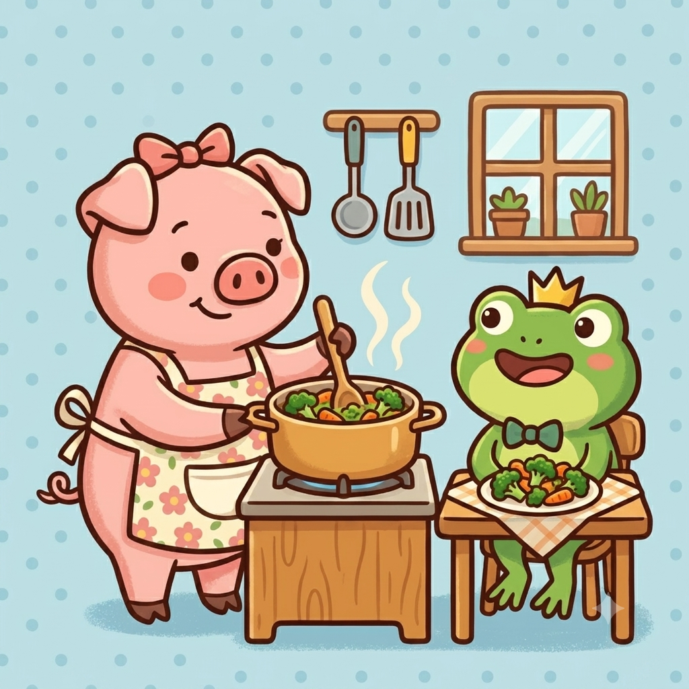

老婆的溫馨料理助手
智慧雙菜搭配・星星健康紀錄
正在初始化智慧廚房...
今日提案
紀錄晚餐
菜單庫
今天晚餐吃什麼？
嚴選 9 種雙菜黃金組合，吃過的名單會自動降低重複率！
智慧生成精簡配搭
{{ suggestedMenu.type }}
🍽️
精選菜單推薦
菜式 1：
{{ suggestedMenu.菜式1 }}
💡 好處: {{ suggestedMenu.菜式1好處 }}
📝 備註: {{ suggestedMenu.菜式1備註 }}
菜式 2：
{{ suggestedMenu.菜式2 }}
💡 好處: {{ suggestedMenu.菜式2好處 }}
📝 備註: {{ suggestedMenu.菜式2備註 }}
套用並填寫晚餐紀錄
紀錄晚餐與星級
用餐日期
菜式一
菜式二 (選填，特別特色菜請留空)
今晚美味評價：{{ recordForm.評價星級 }} 星
心得 / 備註
送出美味紀錄
新增菜色與健康好處
菜名
分類
🥩 肉類
🥦 蔬菜
🐟 魚/海鮮
🥣 湯品
🍳 其它(如豆腐類)
🍜 特別特色菜
難易度
🟢 簡單
🟡 中等
🔴 困難
🥦 營養健康好處
備註 / 煮法
新增此菜色
菜單清單 ({{ filteredDishes.length }})
同步
{{ cat.label }}
目前分類下無菜色。
{{ dish.菜名 }}
{{ getCategoryIcon(dish.分類) }}
{{ dish.分類 }}
⚡ {{ dish.難易度 }}
💡 好處: {{ dish.營養健康好處 }}
📝 備註: {{ dish.備註 }}
編輯/檢視 菜色資訊
菜名
分類
🥩 肉類
🥦 蔬菜
🐟 魚/海鮮
🥣 湯品
🍳 其它(豆腐)
🍜 特色菜
難易度
🟢 簡單
🟡 中等
🔴 困難
🥦 營養健康好處
備註 / 煮法
取消
儲存修改
刪除此菜色